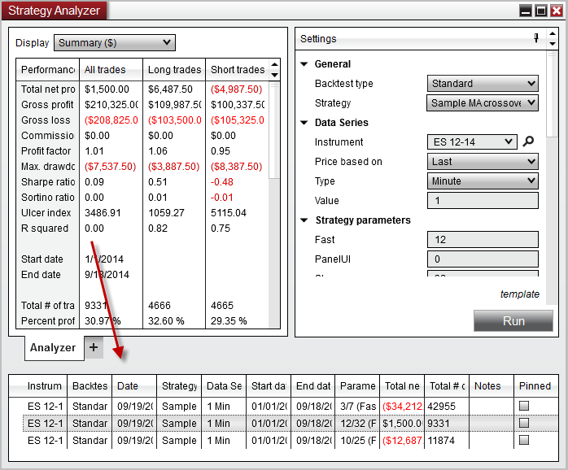
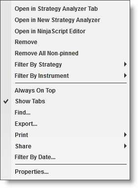

|
<< Click to Display Table of Contents >> Understanding Strategy Analyzer Logs |


|
Understanding Strategy Analyzer Logs
|
<< Click to Display Table of Contents >> Understanding Strategy Analyzer Logs |
|
The Strategy analyzer saves a log on each backtest. The logs can be seen by right clicking on the Strategy Analyzer and selecting "Show Logs". Logs offer a convenient way to keep a history of backtest results. They can be used as you work to develop a strategy and fine tune parameters and code to compare previous backtests to current backtests easily.
The log also contains a saved snapshot version of the code used for the backtest, making it possible to look at or revert to previous code used.
Note: Code save functionality only works on open and unlocked NinjaScript Strategies. Strategies which are protected by the vendor cannot be used to save code. |

 Understanding what is saved in the logs
Understanding what is saved in the logs
Understanding LogsNinjaTrader saves a log each time you perform a backtest in the strategyt analyzer. It saves several key information in the log which makes it easier to iterate on a strategy over time.
The log saves the following information per test:
|
Using LogsLogs are integrated with the Strategy Analyzer and can be double clicked to quickly restore the parameters and backtest information for that backtest. Giving you freedom to experiment with different configurations while maintaining the ability to compare previous backtests and restore a previous backtest at any time.Right clicking on a backtest log yields the following context menu:
|